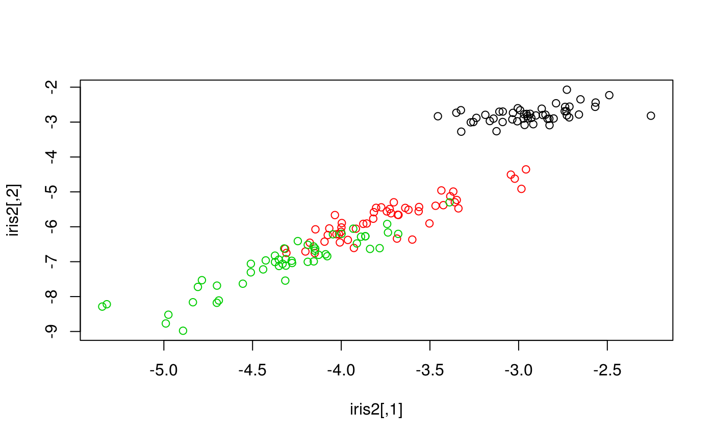

The main objective of most autoencoders is to learn a new set of features out of nonlinear transformations which present some useful properties, such as lower dimension, distance preservation or noise resilience. In this article we explore the possibilities of using just a basic autoencoder with Ruta.
Ruta provides to ways of creating and training autoencoders. The first is the straight-forward autoencode function. It receives a data matrix as input and returns the learned features by an autoencoder with a single hidden layer of the specified size:
library(ruta)
x = as.matrix(iris[, 1:4])
iris2 = autoencode(x, 2)Since this function only returns the learned features, one cannot reuse the trained autoencoder. This is useful, however, for low-dimension visualizations:
plot(iris2, col = iris[, 5])
For more customization options and reusability, we can build an autoencoder object (of class "ruta_autoencoder"). This can be done via the autoencoder family of functions.
network <- input() + dense(36, "tanh") + output("sigmoid")
my_ae <- autoencoder(network, loss = "binary_crossentropy")Notice that this allows to define a deeper architecture: in this example we have created an autoencoder with one 36-unit hidden layer, apart from the input and output layers which will have as many units as features in the training data. We have also defined activation functions for each layer: \(\tanh\) is a common activation for the encoding layer, and setting sigmoid as the output will ensure an output in the range \([0,1]\). We can also specify the loss function we want to optimize. Here, "binary_crossentropy" is an objective function which works well with binary data and data in the \([0, 1]\) interval, but we can specify any loss available in Keras, another common one would be "mean_squared_error".
Now we need data to train the autoencoder. The keras package provides several well-known datasets:
mnist = keras::dataset_mnist()
# Normalization to the [0, 1] interval
x_train <- keras::array_reshape(
mnist$train$x, c(dim(mnist$train$x)[1], 784)
)
x_train <- x_train / 255.0
x_test <- keras::array_reshape(
mnist$test$x, c(dim(mnist$test$x)[1], 784)
)
x_test <- x_test / 255.0To train this autoencoder we can specify the optimizer (e.g. "sgd", "rmsprop"…), number of epochs and other parameters.
model = train(my_ae, x_train, epochs = 10)Once we have a trained model, we can use it for several purposes. We can encode input data and decode the resulting codifications, for example:
decoded <- reconstruct(model, x_test)This is equivalent to doing the same task in two steps, as follows:
Lastly, let’s display our reconstructions as images:
plot_digit <- function(digit, ...) {
image(keras::array_reshape(digit, c(28, 28), "F")[, 28:1], xaxt = "n", yaxt = "n", col=gray((255:0)/255), ...)
}
plot_sample <- function(digits_test, digits_dec, sample) {
sample_size <- length(sample)
layout(
matrix(c(1:sample_size, (sample_size + 1):(2 * sample_size)), byrow = F, nrow = 2)
)
for (i in sample) {
par(mar = c(0,0,0,0) + 1)
plot_digit(digits_test[i, ])
plot_digit(digits_dec[i, ])
}
}
plot_sample(x_test, decoded, 1:10)
Basic autoencoders provide some more options, such as weight decay of the encoding layer and training with validation data as well:
my_ae_wd <- add_weight_decay(my_ae, decay = 0.01)
train(
my_ae_wd,
x_train,
epochs = 20,
optimizer = "adam",
batch_size = 64,
validation_data = x_test,
metrics = list("binary_accuracy")
)For more details, read the documentation. For the rest of autoencoder variants, see other examples.